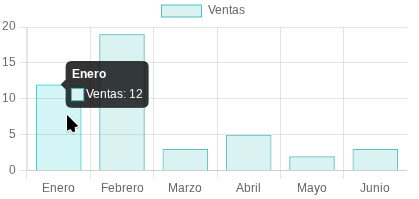

6.2 Gráficos 2D con Chart.js
En esta sección, aprenderemos a integrar la biblioteca Chart.js en nuestras aplicaciones Angular para crear gráficos 2D de manera sencilla y efectiva. Chart.js es una biblioteca popular que nos permite crear una variedad de gráficos, como gráficos de barras, líneas, pasteles y más, con una configuración mínima.
Referencias
Instalación de Chart.js
Para comenzar a utilizar Chart.js en nuestra aplicación Angular, primero debemos instalar la biblioteca. Podemos hacerlo utilizando npm con el siguiente comando:
Configuración de Chart.js en Angular
Una vez que hemos instalado Chart.js, podemos comenzar a utilizarlo en nuestros componentes Angular. A continuación, veremos un ejemplo básico de cómo crear un gráfico de barras utilizando Chart.js.
Crear un componente para el gráfico
Primero, generamos un nuevo componente para nuestro gráfico utilizando la CLI de Angular:
ng generate component chartBar
Implementar el gráfico de barras
Necesitamos un elemento de lienzo (canvas) en la plantilla HTML del componente para renderizar el gráfico. Editamos el archivo chart-bar.html de la siguiente manera:
| src/app/chart-bar/chart-bar.html |
|---|
| <div>
<canvas #barChart></canvas>
</div>
|
A continuación, editamos el archivo chart-bar.ts para configurar y renderizar un gráfico de barras utilizando Chart.js:
| src/app/chart-bar/chart-bar.ts |
|---|
| import { Component, ElementRef, ViewChild } from '@angular/core';
import { Chart, ChartConfiguration } from 'chart.js';
@Component({
selector: 'app-chart-bar',
imports: [],
templateUrl: './chart-bar.html',
styleUrl: './chart-bar.css',
})
export class ChartBar {
@ViewChild('barChart') private chartRef!: ElementRef;
private chart!: Chart;
ngAfterViewInit(): void {
const config: ChartConfiguration = {
type: 'bar',
data: {
labels: ['Enero', 'Febrero', 'Marzo', 'Abril', 'Mayo', 'Junio'],
datasets: [{
label: 'Ventas',
data: [12, 19, 3, 5, 2, 3],
backgroundColor: 'rgba(75, 192, 192, 0.2)',
borderColor: 'rgba(75, 192, 192, 1)',
borderWidth: 1
}]
},
options: {
scales: {
y: {
beginAtZero: true
}
}
}
};
this.chart = new Chart(this.chartRef.nativeElement, config);
}
}
|
Obtendremos un gráfico de barras similar al siguiente:

Aplicación de previsión meteorológica
Vamos a crear una aplicación sencilla que muestre un gráfico de barras con las temperaturas promedio de una semana utilizando Chart.js.
Nos apoyaremos en una API pública para obtener los datos meteorológicos https://wttr.in/, que por defecto devuelve la previsión en formato de texto. Para obtener los datos en formato JSON, podemos utilizar la URL https://wttr.in/{ciudad}?format=j1, donde {ciudad} es el nombre de la ciudad para la que queremos obtener la previsión.
Por ejemplo, para obtener la previsión de Sagunto, utilizamos la URL https://wttr.in/Sagunto?format=j1. Que devuelve un JSON con la previsión meteorológica detallada para los próximos 3 días en intervalos de 3 horas.
Crear el servicio meteorológico
Primero, generamos un servicio para manejar las solicitudes HTTP a la API meteorológica:
ng generate service services/weatherService
Editamos el archivo weather-service.ts para implementar el servicio que obtendrá los datos meteorológicos, aprovecharemos para que funcione como estado global mediante el uso de signals:
| src/app/services/weather-service.ts |
|---|
| import { HttpClient } from '@angular/common/http';
import { inject, Injectable, signal } from '@angular/core';
@Injectable({
providedIn: 'root',
})
export class WeatherService {
WTTR_API_URL = 'https://wttr.in/';
http = inject(HttpClient);
loading = signal(false);
errorMessage = signal('');
currentCity = signal('Sagunto');
currentWeather = signal<Weather | null>(null);
/**
* Obtiene el clima actual y el pronóstico para la ciudad especificada.
*
* Se encarga de actualizar las signals de loading, errorMessage y currentWeather.
*
* @param city
*/
getWeather(city: string) {
const url = `${this.WTTR_API_URL}${city}?format=j1`;
this.loading.set(true);
this.errorMessage.set('');
this.http.get<Weather>(url).subscribe({
next: (data: Weather) => {
data.weather.map(day => {
day.hourly = day.hourly.map(hour => {
return { ...hour, time: this.formatHour(hour.time)};
});
return day;
})
this.currentWeather.set(data);
},
error: (error) => {
this.errorMessage.set(`Error fetching weather data: ${error.message}`);
},
complete: () => {
this.loading.set(false);
}
});
}
/**
* Obtiene los datos del pronóstico en un formato adecuado para utilizar en gráficas.
*
* @returns ForecastData[]
*/
getForecastData(): ForecastData[] {
const weather = this.currentWeather();
if (!weather) {
return [];
}
const forecastData: ForecastData[] = [];
for (const day of weather.weather) {
for (const hour of day.hourly) {
forecastData.push({
datetime: `${day.date} ${hour.time}`,
temp: hour.tempC,
windspeed: hour.windspeedKmph,
winddir: hour.winddir16Point,
humidity: hour.humidity,
});
}
}
return forecastData;
}
/**
* Formatea la hora en formato "HH:MM" a partir de un string en hora ZULU (e.g., "0", "300", "1200").
*
* @param time
* @returns formatted hour string "HH:MM"
*/
formatHour(time: string): string {
const hour = parseInt(time, 10);
const hours = Math.floor(hour / 100);
const minutes = hour % 100;
return `${hours.toString().padStart(2, '0')}:${minutes.toString().padStart(2, '0')}`;
}
}
// ------------------------------------------------
// Interfaces para los datos del clima y pronóstico
// ------------------------------------------------
export interface ForecastData {
datetime: string;
temp: string;
windspeed: string;
winddir: string;
humidity: string;
}
export interface Weather {
current_condition: CurrentCondition[];
nearest_area: NearestArea[];
weather: WeatherForecast[];
}
export interface CurrentCondition {
FeelsLikeC: string;
FeelsLikeF: string;
humidity: string;
temp_C: string;
temp_F: string;
winddir16Point: string;
winddirDegree: string;
windspeedKmph: string;
windspeedMiles: string;
}
export interface NearestArea {
areaName: Array<{ value: string }>;
country: Array<{ value: string }>;
region: Array<{ value: string }>;
}
export interface WeatherForecast {
date: string;
maxtempC: string;
maxtempF: string;
mintempC: string;
mintempF: string;
avgtempC: string;
avgtempF: string;
totalSnow_cm: string;
sunHour: string;
uvIndex: string;
hourly: HourlyForecast[];
}
export interface HourlyForecast {
time: string;
tempC: string;
tempF: string;
windspeedMiles: string;
windspeedKmph: string;
winddirDegree: string;
winddir16Point: string;
humidity: string;
visibility: string;
pressure: string;
cloudcover: string;
heatIndexC: string;
heatIndexF: string;
dewPointC: string;
dewPointF: string;
windChillC: string;
windChillF: string;
windGustMiles: string;
windGustKmph: string;
feelsLikeC: string;
feelsLikeF: string;
chanceofrain: string;
chanceofremdry: string;
chanceofwindy: string;
chanceofovercast: string;
chanceofsunshine: string;
chanceoffrost: string;
chanceofhightemp: string;
chanceoffog: string;
chanceofsnow: string;
chanceofthunder: string;
}
|
Con este servicio, podemos obtener los datos meteorológicos de una ciudad específica y almacenarlos en una señal para que puedan ser utilizados en otros componentes de la aplicación.
Crear componente que solicite el clima
Generamos un nuevo componente para solicitar el clima de una ciudad:
ng generate component components/forecast
Editamos el archivo forecast.ts para implementar el componente que solicitará el clima utilizando el servicio meteorológico:
| src/app/components/forecast/forecast.ts |
|---|
| import { Component, inject } from '@angular/core';
import { WeatherService } from '../../services/weather-service';
@Component({
selector: 'app-forecast',
imports: [],
templateUrl: './forecast.html',
styleUrl: './forecast.css',
})
export class Forecast {
weatherService = inject(WeatherService);
city = this.weatherService.currentCity;
errorMessage = this.weatherService.errorMessage;
forecast = this.weatherService.currentWeather;
loading = this.weatherService.loading;
updateCity(newCity: string) {
this.city.set(newCity);
this.getForecast();
}
getForecast() {
this.weatherService.getWeather(this.city());
}
}
|
En la plantilla HTML del componente forecast.html, añadimos un formulario para ingresar la ciudad y mostrar el clima actual:
| src/app/components/forecast/forecast.html |
|---|
| <div class="container d-flex flex-column align-items-center mt-4 gap-3">
<h1>Previsión meteorológica</h1>
@if(loading()) {
<div class="spinner-border text-primary"
role="status">
<span class="visually-hidden">Cargando...</span>
</div>
}
@else {
<!-- Input para la ciudad y botón para obtener la previsión -->
<div class="container">
<input type="text"
placeholder="Ciudad"
[value]="city()"
(input)="city.set($event.target.value)" />
<button (click)="getForecast()">Obtener previsión</button>
</div>
<!-- Mostrar la previsión si está disponible -->
@if (forecast()) {
<h2>Estación más cercana: {{ `${forecast()!.nearest_area[0].areaName[0].value} -
${forecast()!.nearest_area[0].region[0].value} (${forecast()!.nearest_area[0].country[0].value})` }}</h2>
<div class="row">
<!-- Días del pronóstico -->
@for(day of forecast()?.weather; track day.date) {
<div class="col">
<h3>{{ day.date }}</h3>
<p>Temperatura máxima: {{ day["maxtempC"] }} °C</p>
<p>Temperatura mínima: {{ day["mintempC"] }} °C</p>
<!-- Horas del día -->
@for (hour of day.hourly; track hour.time) {
<div class="hourly">
<h4>Hora: {{ hour.time }}</h4>
<p>Temperatura: {{ hour.tempC }} °C</p>
<p>Humedad: {{ hour.humidity }} %</p>
</div>
}
</div>
}
</div>
}
<!-- Mostrar mensaje de error si existe -->
@else if(errorMessage()) {
<div class="error">
{{ errorMessage() }}
</div>
}
}
</div>
|
Crear el componente del gráfico meteorológico
Generamos un nuevo componente para mostrar el gráfico meteorológico:
ng generate component components/forecastGraph
Editamos el archivo forecast-graph.ts para implementar el componente que mostrará el gráfico de barras con las temperaturas promedio utilizando Chart.js:
| src/app/components/forecast-graph/forecast-graph.ts |
|---|
| import { Component, effect, ElementRef, inject, Signal, viewChild } from '@angular/core';
import { Chart } from 'chart.js/auto';
import { WeatherService } from '../../services/weather-service';
@Component({
selector: 'app-forecast-graph',
imports: [],
templateUrl: './forecast-graph.html',
styleUrl: './forecast-graph.css',
})
export class ForecastGraph {
lineChart: Signal<ElementRef<HTMLCanvasElement> | undefined> = viewChild('lineChart');
weatherService = inject(WeatherService);
updateForectast = effect(() => {
this.weatherService.currentWeather();
console.log('Forecast data updated:', this.weatherService.getForecastData());
if (!this.weatherChart) {
return;
}
this.weatherChart.data.labels = this.weatherService.getForecastData().map(fd => fd.datetime);
this.weatherChart.data.datasets[0].data = this.weatherService.getForecastData().map(fd => fd.temp);
this.weatherChart.data.datasets[1].data = this.weatherService.getForecastData().map(fd => fd.humidity);
this.weatherChart.data.datasets[2].data = this.weatherService.getForecastData().map(fd => fd.windspeed);
this.weatherChart?.update();
});
weatherChart: any;
ngAfterViewInit() {
this.weatherChart = new Chart(
this.lineChart()!.nativeElement,
{
type: 'line',
data: {
labels: [this.weatherService.getForecastData().map(fd => fd.datetime) || []],
datasets: [
{
label: 'Temperatura (°C)',
backgroundColor: 'rgb(255, 99, 132)',
borderColor: 'rgb(255, 99, 132)',
data: this.weatherService.getForecastData().map(fd => fd.temp) || [],
},
{
label: 'Humedad (%)',
backgroundColor: 'rgb(54, 162, 235)',
borderColor: 'rgb(54, 162, 235)',
data: this.weatherService.getForecastData().map(fd => fd.humidity) || [],
},
{
label: 'Viento (km/h)',
backgroundColor: 'rgb(75, 192, 192)',
borderColor: 'rgb(75, 192, 192)',
data: this.weatherService.getForecastData().map(fd => fd.windspeed) || [],
}
],
},
options: {},
}
)
}
}
|
Con este componente, podemos renderizar un gráfico de líneas que muestra la temperatura, humedad y velocidad del viento a lo largo del tiempo utilizando los datos obtenidos del servicio meteorológico.
Por otro lado, en la plantilla HTML del componente forecast-graph.html, añadimos el elemento de lienzo (canvas) para renderizar el gráfico:
| src/app/components/forecast-graph/forecast-graph.html |
|---|
| <div class="container-fluid d-flex flex-column align-items-center h-100">
<div class="charts-container">
<canvas #lineChart style="width: 100%; height: 400px;"></canvas>
</div>
</div>
|